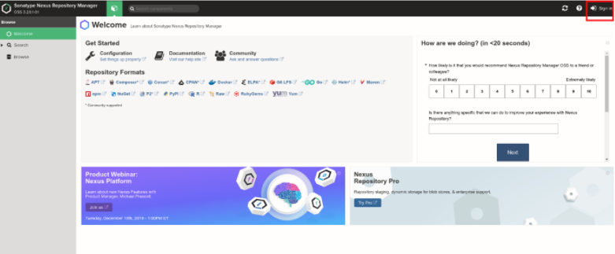
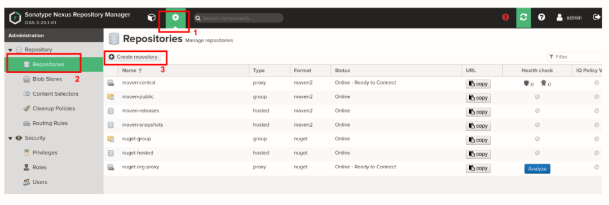
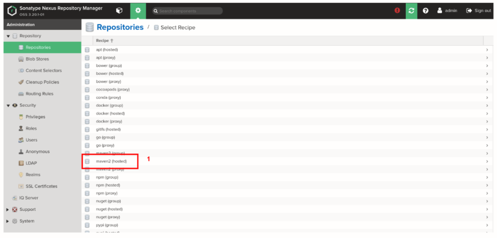
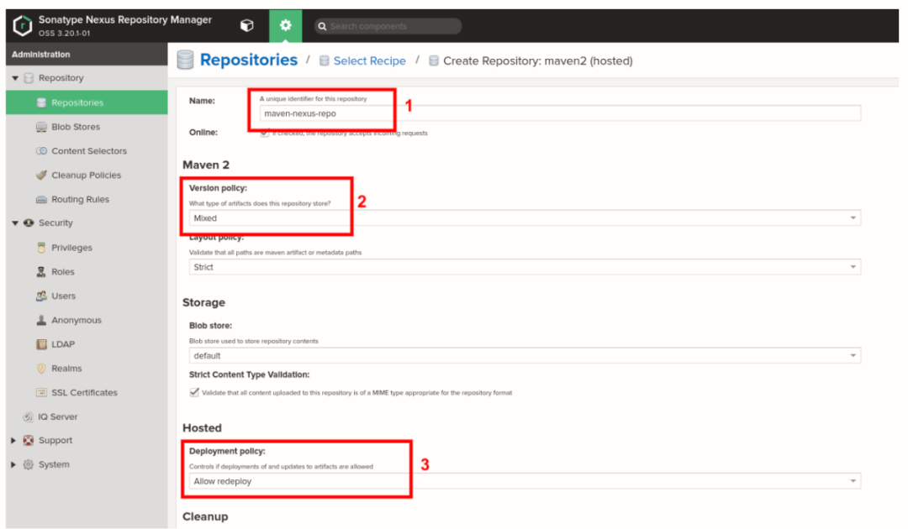
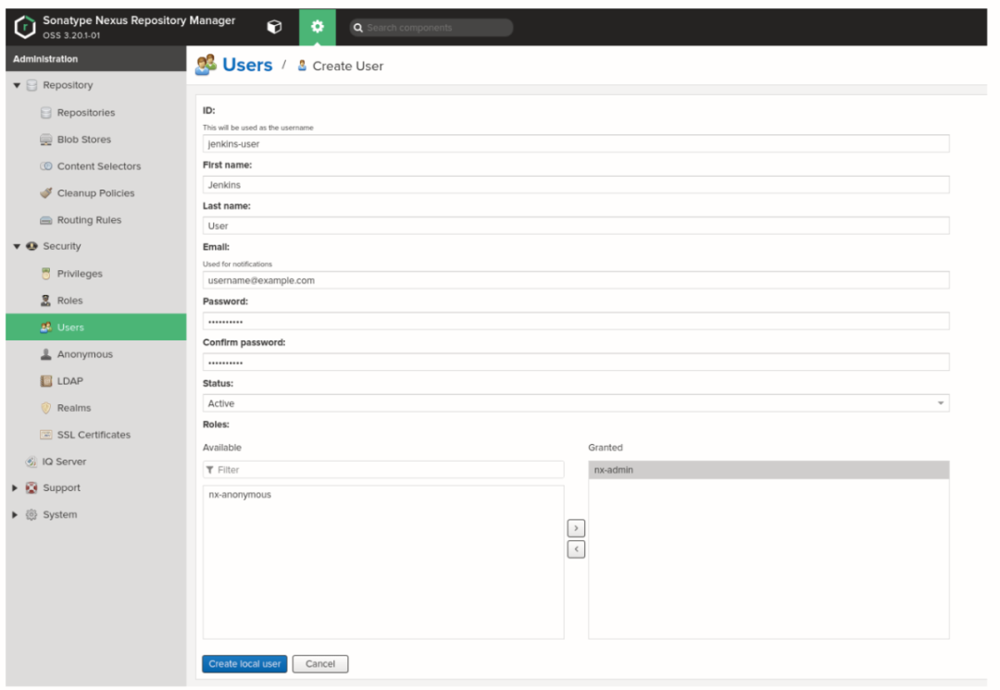
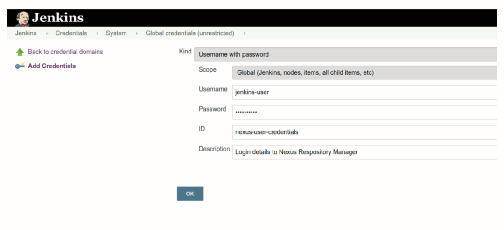
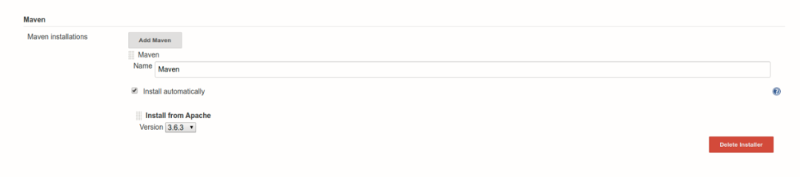
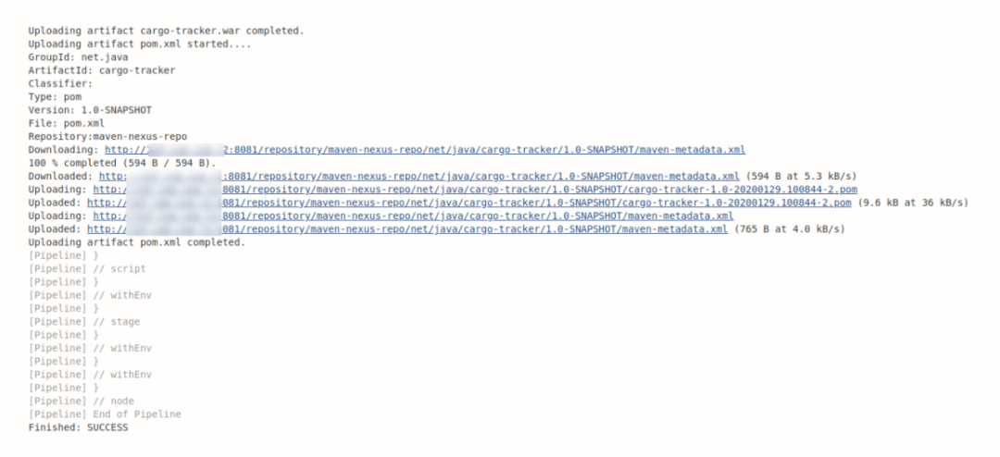
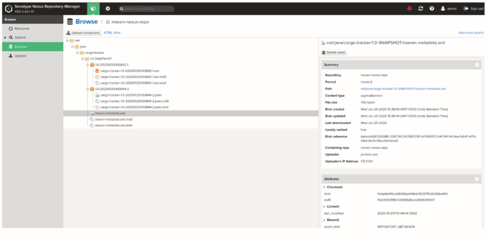

第五节 Jenkins流水线将制品发布到Nexus存储库
本指南的目的是创建一个工作流，我们可以在该工作流中通过Maven和CI服务器来构建，存储，管理和监视已编译的制品。
在开始之前，请确保您已经启动并运行了Jenkins。如果您尚未设置Jenkins，请复制以下命令并在启用Docker的主机上运行它。
docker run -d --name jenkins-ci -p 8080:8080 jenkins/jenkins:lts
在本地/远程计算机上配置了Jenkins容器后，请浏览器打开URL。
http:///your-ip-addr:8080
在首页，Jenkins将询问您管理员密码，您可以通过在终端中运行以下提到的命令来找到该密码。
docker exec -i jenkins-ci cat /var/jenkins_home/secrets/initialAdminPassword
b5102c8d9fa245dbb0b8da03f504d3a5
请按照指导的步骤完成配置。安全保存用户名和密码，以备将来使用。
安装Nexus制品库
Nexus是一个存储库管理器，可让您存储和检索工件。它使您能够将构建的工件托管在私有且安全的存储库中。
您始终可以使用以下命令获取Nexus Docker映像：
$ docker pull sonatype/nexus3
Using default tag: latest
latest: Pulling from sonatype/nexus3
cb3c77f9bdd8: Pull complete
fd8daf2668d1: Pull complete
fd1ff82b00e8: Pull complete
2a05f7b573af: Pull complete
Digest: sha256:6570855dfbc3eb094fe5cbbacec87aa8b91d16394dab627177e1deeebb5ac8ee
Status: Downloaded newer image for sonatype/nexus3:latest
docker.io/sonatype/nexus3:latest
在默认端口8081上运行 sonatype/nexus。请遵循以下命令：
$ docker run -d --name nexus_repo -p 8081:8081 sonatype/nexus3
在新创建的Docker容器中启动Nexus服务通常需要1-2分钟。如果您希望按照日志查看Nexus是否已启动并准备就绪，请运行以下命令：
$ docker logs nexus_repo -f
在日志中，您会看到一条消息：Started Sonatype Nexus OSS 3.20.1-01这意味着您的Nexus Repository Manager可以使用了。现在转到浏览器并打开
http://your-ip-addr:8081
找到“ 登录” 选项，如下所示：

默认用户名是admin，您需要运行以下命令来获取密码：
$ docker exec -i nexus_repo cat /nexus-data/admin.password
502ace93-5450-4f0d-97d2-9b3b3a88d149
就是这样。您的Nexus Repository Manager可以随时使用。下一步是创建一个新的存储库。
在Nexus中创建存储库
在这一步中，您将在Nexus中创建一个Maven托管存储库，您的Jenkins将在其中上载“构建”工件。
步骤1：按照以下步骤创建托管存储库，并将其命名 maven-nexus-repo，将在本指南中使用。

从列表中选择 maven2，如下所示：

步骤2：在“ 创建存储库”页面上
- 输入名称为
maven-nexus-repo - 在版本策略中，选择工件的类型。
- 在“ 托管” 部分 下的“ 部署策略”中，选择“ 允许重新部署”。它将允许您多次部署应用程序。

步骤3：要创建新用户，请转到 信息中心>服务器管理员和配置>用户>创建用户。选择 恰好是默认领域的本地用户类型：

在“ 创建用户”页面中
- ID：输入所需的ID；在我们的案例中，它是Jenkins用户。
- 名字：输入所需的名字；就我们而言，就是Jenkins。
- 姓：输入所需的名字；在我们的例子中是用户。
- 电子邮件：输入您的电子邮件地址。
- 状态：从下拉菜单中选择 有效。
- 角色：确保将
nx-admin角色授予 用户。
至此，我们完成了Nexus Repository Manager的设置部分。让我们转到Jenkins在此处设置Nexus。
在Jenkins中安装和配置Nexus插件
在这里，您将为Jenkins中的Nexus安装并配置一些插件。为此，请转到Jenkins，然后转到 信息中心>管理Jenkins>管理插件>可用， 然后搜索并安装 Nexus Artifact Uploader 插件。
在Jenkins中添加Nexus Repository Manager的用户凭据。转到 仪表板>凭证>系统>全局凭证（不受限制），如下所示：

接下来，将Maven设置为托管工具。转到 仪表板>管理Jenkins>全局工具配置， 然后找到 Maven。在此部分下，单击“ Maven安装” 按钮并添加 Maven，如下所示：

另外，您也可以将Maven二进制文件直接安装到/var/jenkins_home目录中的容器中。
创建一条Jenkins流水线
pipeline {
agent {
label "master"
}
tools {
maven "Maven"
}
environment {
NEXUS_VERSION = "nexus3"
NEXUS_PROTOCOL = "http"
NEXUS_URL = "you-ip-addr-here:8081"
NEXUS_REPOSITORY = "maven-nexus-repo"
NEXUS_CREDENTIAL_ID = "nexus-user-credentials"
}
stages {
stage("Clone code from VCS") {
steps {
script {
git 'https://github.com/javaee/cargotracker.git';
}
}
}
stage("Maven Build") {
steps {
script {
sh "mvn package -DskipTests=true"
}
}
}
stage("Publish to Nexus Repository Manager") {
steps {
script {
pom = readMavenPom file: "pom.xml";
filesByGlob = findFiles(glob: "target/*.${pom.packaging}");
echo "${filesByGlob[0].name} ${filesByGlob[0].path} ${filesByGlob[0].directory} ${filesByGlob[0].length} ${filesByGlob[0].lastModified}"
artifactPath = filesByGlob[0].path;
artifactExists = fileExists artifactPath;
if(artifactExists) {
echo "*** File: ${artifactPath}, group: ${pom.groupId}, packaging: ${pom.packaging}, version ${pom.version}";
nexusArtifactUploader(
nexusVersion: NEXUS_VERSION,
protocol: NEXUS_PROTOCOL,
nexusUrl: NEXUS_URL,
groupId: pom.groupId,
version: pom.version,
repository: NEXUS_REPOSITORY,
credentialsId: NEXUS_CREDENTIAL_ID,
artifacts: [
[artifactId: pom.artifactId,
classifier: '',
file: artifactPath,
type: pom.packaging],
[artifactId: pom.artifactId,
classifier: '',
file: "pom.xml",
type: "pom"]
]
);
} else {
error "*** File: ${artifactPath}, could not be found";
}
}
}
}
}
}
让我们逐一分解上述参数：
NEXUS_VERSION：在这里，我们必须提及Nexus的确切版本，可以是nexus2或nexus3。在我们的情况下，它是的最新版本nexus3。NEXUS_PROTOCOL：对于本指南，我们使用了HTTP协议，但是，在正式生产的情况下，您将必须使用HTTPS。NEXUS_URL：添加您的IP地址和端口号，以运行Nexus。确保您添加的Nexus实例详细信息没有提及协议，例如https或http。NEXUS_CREDENTIAL_ID：输入您先前在Jenkins中创建的用户ID，在本例中为nexus-user-credentials。- Git项目：在阶段阶段，我们使用了https://github.com/javaee/cargotracker
在完成管道设置的过程中，是时候开始Build我们的项目了。转到JenkinsNexus项目作业页面，然后单击立即构建。由于这是您的第一个构建，因此将需要一些时间。
一旦构建成功，在Jenkins控制台输出中，您将看到类似以下内容

而在Nexus Repository Manager中，您会看到类似以下内容：

对于任何组织而言，一种系统地分发项目工件的方法都是至关重要的。借助Jenkins Pipeline和Nexus Repository Manager，您可以集中管理制品，从而最终减少了重新生成构建时间以及切换CI工具的工作。
Nexus还可以配置有AWS S3和Google Cloud Storage等云存储服务，从而为您提供了更多的自由度和交付应用程序，而无任何存储麻烦。